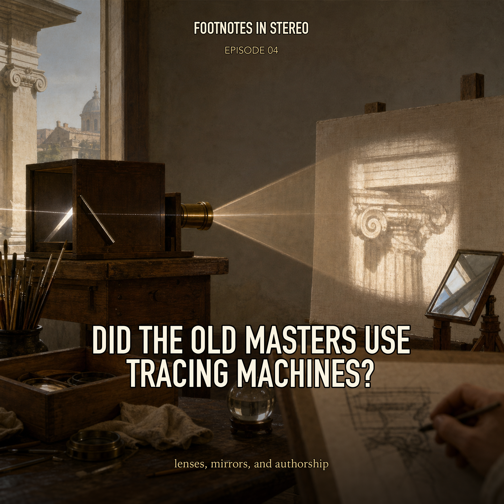

Episode 4 · Public episode
Did the Old Masters Use Tracing Machines?
What counts as authorship when artists use lenses, mirrors, projections, assistants, archives, and systems? Mira and Theo start with the Hockney-Falco thesis and its critics, then follow the argument through Vermeer, photography, museum datasets, and modern debates over tools, skill, and creative labor. Created with Gemini Notebook.
Sources
- Hockney-Falco thesis - Wikipedia
- Why David Hockney Should Not Be Taken Seriously - Art Renewal Center
- Reverse-Engineering a Genius (Has a Vermeer Mystery Been Solved?)
- AI and the Arts: How Machine Learning is Changing Creative Work - Oxford Internet Institute
- Integrating GenAI in Filmmaking: From Co-Creativity to Distributed Creativity - arXiv
- Photography - CSUN
- The Algorithmic Gaze: Deconstructing Authorship and Aesthetics in Generative Artificial Intelligence Art - Enigma in Cultural
- Refik Anadol: Unsupervised - MoMA
- Is AI a Medium? - The Journal of Aesthetics and Art Criticism
- The Ethical and Legal Implications of AI in the Arts and Creative Industries - Oxford University Research Archive
Transcript
Machine transcript; lightly formatted and subject to correction.
Transcript processing. Check back shortly.